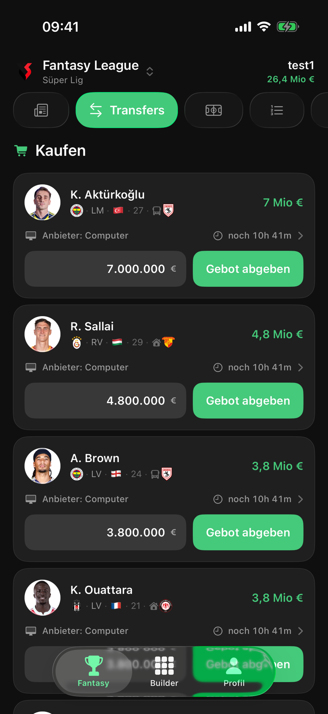
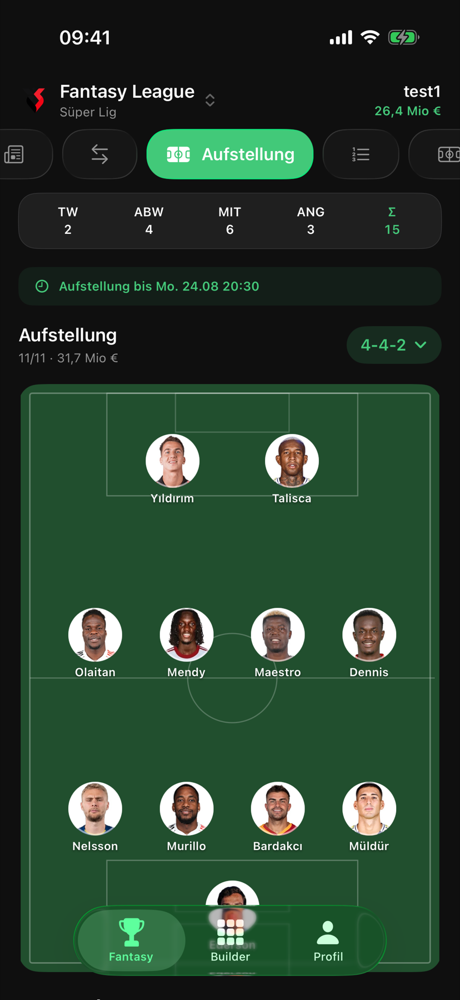
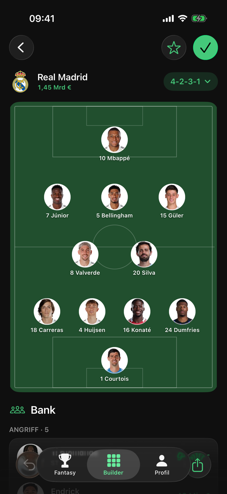

Einladen
Erstelle eine Liga und hol deine Freunde per Einladungscode dazu.
Gründet eure eigene Liga, handelt um Spieler und stellt eure Elf auf. Am Wochenende zeigt sich, wer das bessere Team zusammengestellt hat.


Einladung teilen, Kader aufbauen, den nächsten Spieltag verfolgen. Alles, was ihr für eure eigene Manager-Liga braucht.
Erstelle eine Liga und hol deine Freunde per Einladungscode dazu.
Verpflichte Spieler, plane dein Budget und entscheide, wer in deiner Elf steht.
Sammle Punkte aus echten Partien und verfolge, wer in eurer Liga vorne liegt.
Biete auf Spieler, verkaufe aus deinem Kader oder mache einem Mitspieler ein direktes Angebot. Ob du auf einen Star setzt oder dein Team breiter aufstellst: Du entscheidest, wofür dein Budget reicht.
Wähle deine Formation und besetze die elf Positionen. Vor dem Anpfiff steht deine Mannschaft – danach zählt, was deine Spieler in den echten Partien leisten.
Tore, Vorlagen, Karten und Bewertungen fließen in die Punkte ein. In der Tabelle und den Spieltagsübersichten seht ihr, was eure Entscheidungen gebracht haben.
Welche Elf würdest du aufstellen? Kombiniere reale Spieler im Squad Builder, probiere Formationen aus und speichere deine Teams. Dein Ergebnis kannst du als Bild mit anderen teilen.

Eine Person erstellt die Liga und teilt den Einladungscode. Die anderen treten mit ihrem Konto bei. Je nach Einstellung muss ein Admin den Beitritt erst freigeben.
Ja. Beim Erstellen der Liga legst du die verfügbaren Liga- und Wertungseinstellungen fest. Welche Regeln für euch gelten, könnt ihr in der Liga nachsehen.
Die Wertung basiert auf realen Fußballspielen. Spielereignisse und Bewertungen werden nach den Regeln eurer Liga in Punkte umgerechnet. Daten können zeitversetzt eintreffen oder später korrigiert werden.
Für Anmeldung, Gebote, Ligaänderungen und aktuelle Spielstände brauchst du eine Verbindung. Bereits geladene Inhalte können teilweise auch ohne Netz verfügbar sein.
Ja. Beide Freigaben sind freiwillig und zunächst ausgeschaltet. Du findest die getrennten Schalter unter Profil → Datenschutz und kannst sie dort jederzeit widerrufen.
Wir bereiten den ersten öffentlichen Release vor. Sobald Matchday XI im App Store verfügbar ist, findest du den Download-Link auf dieser Seite.
Matchday XI kommt bald für iPhone und iPad. Bis dahin beantworten wir deine Fragen gerne per E-Mail.
Frage stellen